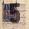

Apunts d'Història de la Música 2020-21
Aula de Música Moderna i Tradicional
La música a la prehistòria
La música a l'Edat antiga
La música a l'Alta Edat Mitjana
La música profana a l'Edat Mitjana

La polifonia medieval fins el segle XIII
La polifonia al segle XIV
La polifonia al segle XV (I): de Dufay a Obrecht
La polifonia al segle XV (II): des Prez i els seus contemporanis
Música profana a l'Espanya del segle XVI
Música religiosa del segle XVI (I): La Reforma protestant
Música religiosa del segle XVI (II): La Contrareforma
El madrigal
El naixement de l'òpera
Nous gèneres del Barroc (I)
Nous gèneres del Barroc (II)
L'òpera al segle XVIII
El classicisme musical
El Romanticisme (I)
El Romanticisme (II)
L'òpera al segle XIX
Enllaços interessants